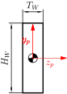
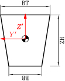
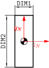
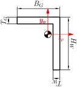
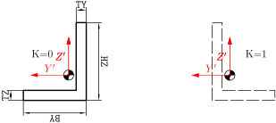
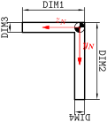
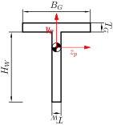
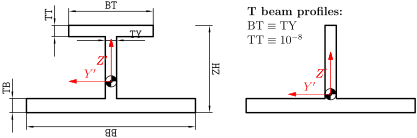
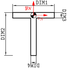
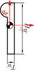

Cross section descriptions for FE programs
Table of Contents
1 Beam direction
1.1 POSEIDON
The x axis is directed along the beam, coinciding with the center of gravity (neutral axis) from the first node the second. The direction node defines local y direction. Direction nodes ``-1'', ``-2'', or ``-3'' define the local y direction in global x, y, or z direction respectively, ``-4'', ``-5'', or ``-6'' define the local y direction in negative global x, y, or z direction respectively.
1.2 Sesam
The x axis is directed along the beam, coinciding with the center
of gravity (neutral axis) and pointing from node ``1'' to ``2''.
The GUNIVEC record defines local z axis.
1.3 NASTRAN
The x axis is directed along the beam, coinciding with the shear
center and pointing from node ``A'' to ``B''. G0, or X1, X2, and
X3 describe local y axis.
2 Describing beam cross sections in POSEIDON, Sesam, and Patran
2.1 Flat bar

Figure 1: FB: Cross section dimensions in an POSEIDON flat bar.

Figure 2: GBARM: Cross section dimensions in Sesam massive bar.

Figure 3: FB: Cross section dimensions in a NASTRAN flat bar.
2.2 L bar

Figure 4: L: Cross section dimensions in a POSEIDON L profile section.

Figure 5: GLSEC: Cross section dimensions in a Sesam L profile section.

Figure 6: L: Cross section dimensions in a Nastran L profile section.
2.3 T beam

Figure 7: T: Cross section dimensions in a Poseidon T profile section.

Figure 8: GIORH: Cross section dimensions in a Sesam GIORH profile section (used to model T sections).

Figure 9: T: Cross section dimensions in a Nastran T profile section.
2.4 HP profile

Figure 10: HP: Cross section dimensions in a POSEIDON HP profile section.